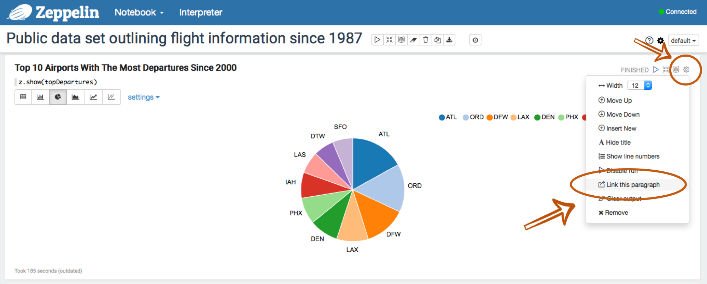
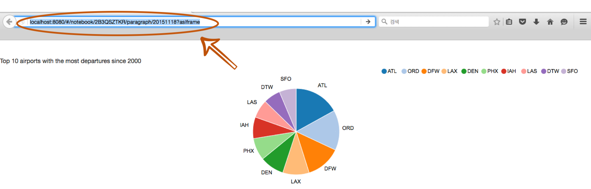

How can you publish your paragraph ?
Apache Zeppelin provides a feature for publishing your notebook paragraph results. Using this feature, you can show Zeppelin notebook paragraph results in your own website.
It's very straightforward. Just use <iframe> tag in your page.
Copy a Paragraph Link
A first step to publish your paragraph result is Copy a Paragraph Link.
After running a paragraph in your Zeppelin notebook, click a gear button located on the right side. Then, click Link this Paragraph menu like below image.
 Just copy the provided link.

Embed the Paragraph to Your Website
For publishing the copied paragraph, you may use <iframe> tag in your website page.
For example,
<iframe src="http://< ip-address >:< port >/#/notebook/2B3QSZTKR/paragraph/...?asIframe" height="" width="" ></iframe>
Finally, you can show off your beautiful visualization results in your website.
Note: To embed the paragraph in a website, Apache Zeppelin needs to be reachable by that website. And please use this feature with caution and in a trusted environment only, as Zeppelin entire Webapp could be accessible by whoever visits your website.